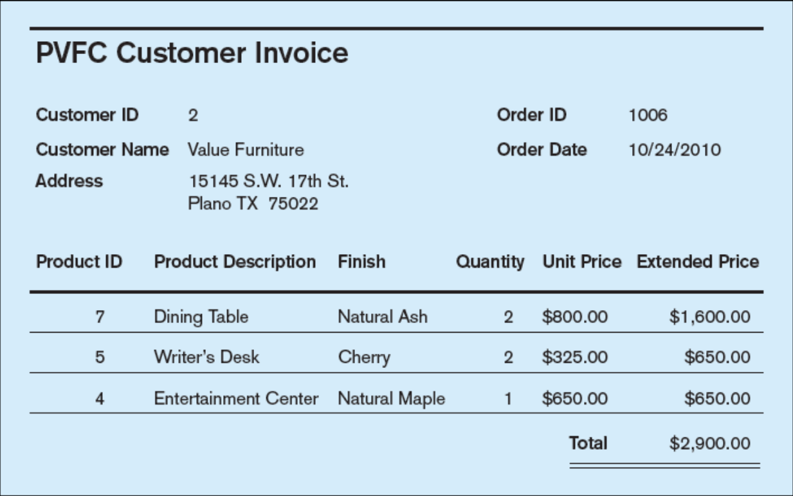
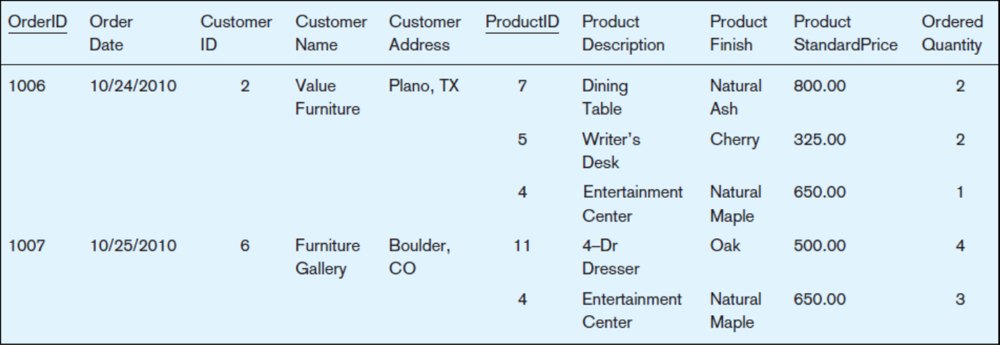
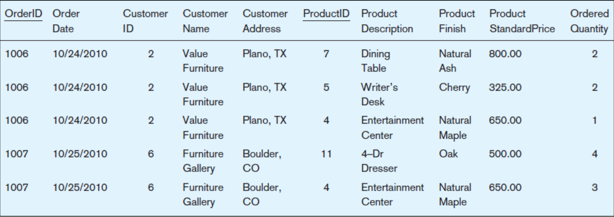

Redundancy menyebabkan anomali pada pengoperasian database
Anomali
Anomali penambahan data
Penambahan data baru mengharuskan pengisian ulang atribut tertentu dengan nilai yang sama
Anomali penghapusan data
Penghapusan data dapat menyebabkan hilangnya nilai atribut yang hanya ada di record yang dihapus
Anomali perubahan data
Perubahan data pada atribut record tertentu mengharuskan perubahan data pada atribut yang sama di record yang lain
Anomali

Anomali

Unnormal Form
Anomali Penambahan Data
Apa yang terjadi kalau perlu ditambahkan informasi produk baru (Product ID, Product Description, Product Finish, Product StandardPrice)
tetapi belum terjadi penjualan produk itu sama sekali sebelumnya?
Anomali Perubahan Data
Apa yang terjadi apabila Customer "Value Furniture" pindah alamat?
Anomali Penghapusan Data
Apa yang terjadi apabila Product ID 7 Dining Table dihapus dari database?
Tahapan normalisasi
Unnormal form (UNF)
1st Normal Form (1NF)
2nd Normal Form (2NF)
3rd Normal Form (3NF)
Unnormal Form (UNF)
Masih memiliki atribut multivalue
1st Normal Form (1NF)
Seluruh atribut multivalue menjadi atomic (menjadi instance tersendiri)

2nd Normal Form (2NF)
Memenuhi persyaratan 1NF
Seluruh atribut non kunci bergantung sepenuhnya pada atribut kunci/candidate key (functional dependency)
3rd Normal Form (3NF)
Memenuhi persyaratan 2NF
Tidak ada lagi atribut non kunci yang bergantung pada pada atribut non kunci lainnya (transitive dependency)